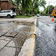
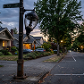

Public Incident Registry
Community Reports & Fixes
Open incident feed in Jakarta and surrounding urban regions. Public visitors may browse; sign in to interact.
-

In review CMP-2026-8841 ·Perumda PAM JAYA (Clean Drinking Water)PAM clean drinking water pipeline burst flooding sidewalk in front of Cipete Raya MRTJl. Fatmawati Raya No. 42 (depan Stasiun MRT Cipete Raya)· Water & Sewage
-

AssignedCMP-2026-8819·Dinas Bina Marga DKI Jakarta (Roads & Sidewalks)Severe 15cm asphalt cavity in TransJakarta corridor causing motorbike rim damageJl. Gatot Subroto Kav. 38 (depan Menara Mulia, Jalur TransJakarta)· Roads & Transit
-
 ResolvedCMP-2026-8794·Dinas Perhubungan DKI Jakarta (PJU & Traffic)Complete PJU streetlight outage spanning 300 meters along residential corridor
ResolvedCMP-2026-8794·Dinas Perhubungan DKI Jakarta (PJU & Traffic)Complete PJU streetlight outage spanning 300 meters along residential corridorJl. Tebet Barat Dalam Raya No. 24, RT 08 / RW 03· Street Lighting
-
 In reviewCMP-2026-8720·Dinas Lingkungan Hidup DKI Jakarta (Waste & Rivers)Illegal household trash accumulation obstructing drainage at Kali Krukut Kemang
In reviewCMP-2026-8720·Dinas Lingkungan Hidup DKI Jakarta (Waste & Rivers)Illegal household trash accumulation obstructing drainage at Kali Krukut KemangKampung Kemang, RT 02 / RW 01 (bantaran Kali Krukut)· Sanitation & Waste
-
 Assigned CMP-2026-8650 ·Dinas Pertamanan dan Hutan Kota DKI JakartaHazardous decayed Trembesi tree limb at risk of collapse over walking path
Assigned CMP-2026-8650 ·Dinas Pertamanan dan Hutan Kota DKI JakartaHazardous decayed Trembesi tree limb at risk of collapse over walking pathTaman Suropati (sisi timur, dekat patung ASEAN)· Public Parks & Trees
-
SubmittedCMP-2026-8601·Satpol PP Provinsi DKI Jakarta (Public Order)Heavy excavation equipment operating past 22:00 WIB in residential alley
Jl. Senopati No. 18, RT 06 / RW 02· Noise & Disturbance